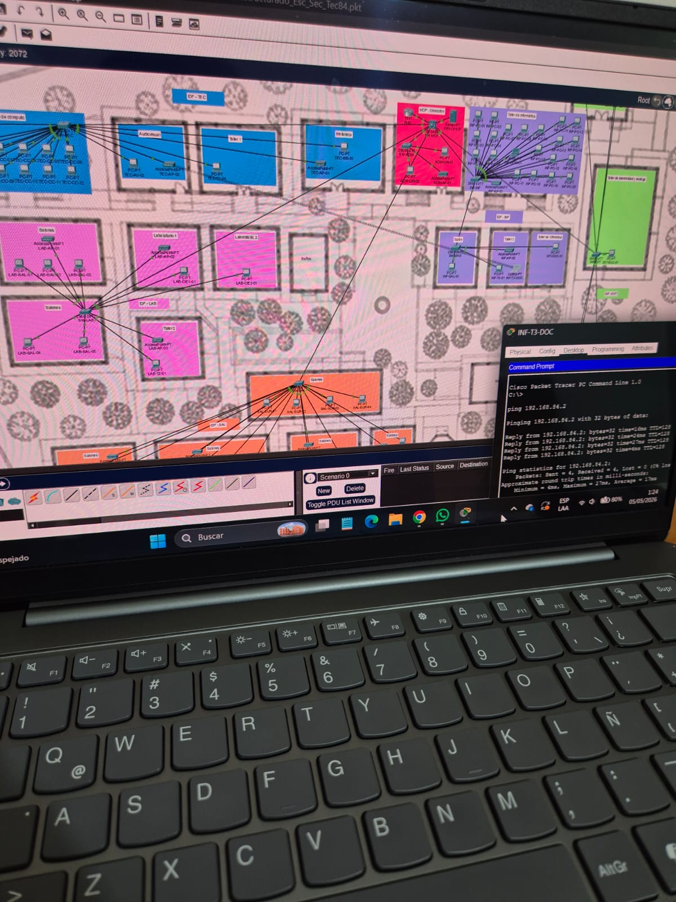
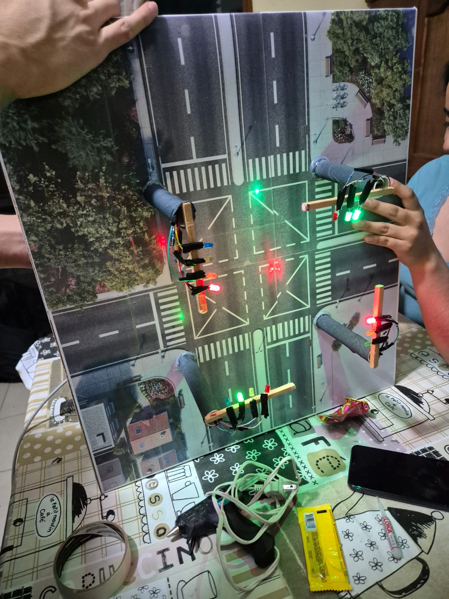
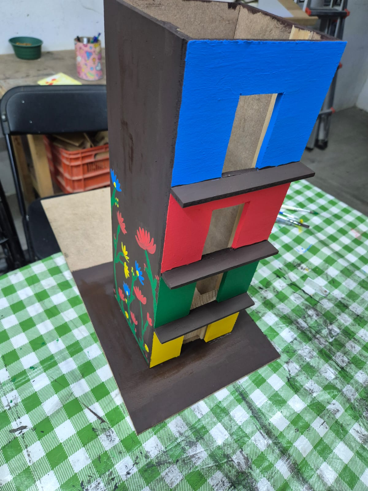
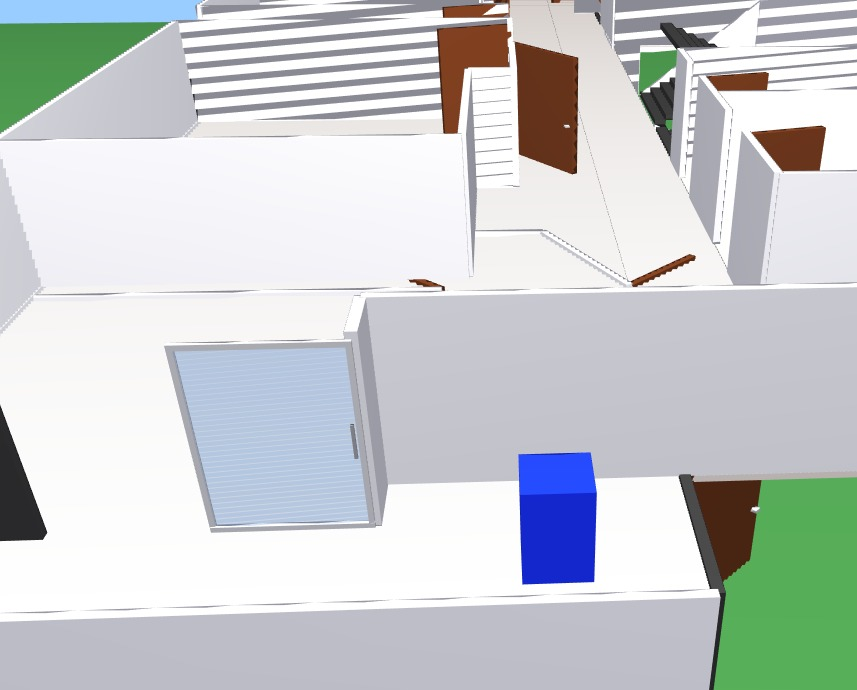
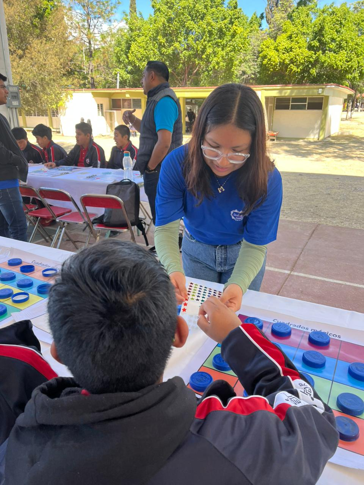
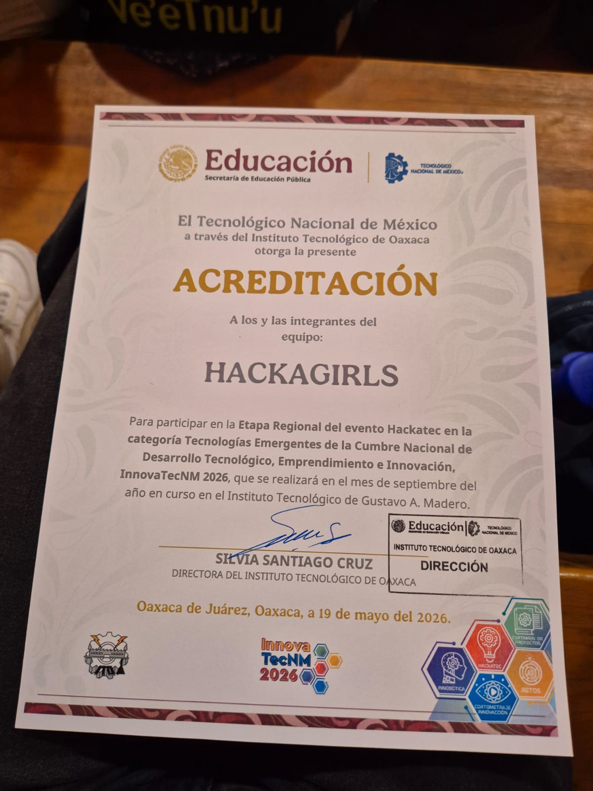

Desarrollo Web
HTML, CSS, JavaScript y Tailwind CSS. Interfaces claras y funcionales, desde componentes sueltos hasta páginas completas.
Estudiante de Ingeniería en Sistemas
Estudiante de Ingeniería en Sistemas Computacionales en el Instituto Tecnológico de Oaxaca. Construyo interfaces web, gráficos 3D con Java y programas en ensamblador.
Lo que hago
HTML, CSS, JavaScript y Tailwind CSS. Interfaces claras y funcionales, desde componentes sueltos hasta páginas completas.
Modelado y renderizado con Java y JOGL/OpenGL: texturas, iluminación e interiores construidos pieza por pieza.
Programación en ensamblador (MASM/TASM) combinada con C, controlando hardware directamente: puertos, memoria y periféricos.
Portafolio

Propuesta de cableado estructurado para un plantel educativo, diseñada en Cisco Packet Tracer: segmentación por áreas (cómputo, laboratorios, biblioteca, dirección, talleres), IDFs distribuidos y pruebas de conectividad entre equipos.
Ver detalle →
Maqueta física de un cruce real de Oaxaca con semáforos de LED controlados desde ensamblador, sincronizando las secuencias de luces de cada calle a través del puerto de la PC.
Ver detalle →
Maqueta de un elevador controlado desde ensamblador, con botonera para pedir piso y movimiento sincronizado del cabezal según la señal recibida.
Ver detalle →
Maqueta física de una casa de tres niveles, pintada a mano con un piso de color distinto por planta y un mural floral en la fachada lateral.
Ver detalle →
Sobre mí
Estudio la carrera de Ingeniería en Sistemas Computacionales en el Instituto Tecnológico de Oaxaca, donde he trabajado en materias como Programación web, Lenguaje ensamblador, Graficación con Java y OpenGL, y pruebas de software.
Me interesa entender a fondo cómo funciona cada línea de código que escribo, no solo que funcione. Disfruto resolver problemas paso a paso y colaborar en proyectos donde puedo aprender de otras personas tanto como aportar.
Stack y herramientas
Trabajo en equipo
"Trabajar con Meli en CasaTres fue clave para organizar el código en módulos. Siempre proponía dividir el problema en partes más simples antes de programar y subir los cambios a GitHub."
"Se nota cuando alguien entiende lo que programa y no solo copia código. Buen manejo de las prácticas de ensamblador y disposición para resolver dudas."
"Me ayudó a entender la diferencia entre funciones puras y componentes visuales cuando estábamos viendo SweetAlert2 en la clase de programación web."
Fuera de clase
Reconocimiento del Instituto de Matemáticas de la UNAM (Unidad Oaxaca) y el CBTis No. 26 por compartir este taller en el Festejo Oaxaqueño del Día de π.

Acreditación del Tecnológico Nacional de México (ITO) para participar con mi equipo en la etapa regional de Hackatec, categoría Tecnologías Emergentes, InnovaTecNM 2026.
Constancia del Tecnológico Nacional de México por concluir el curso MOOC "PICROD01-005: Propiedad Intelectual" en la plataforma mooc.tecnm.mx.
Certificado de finalización del curso "Artificial Intelligence and Applications" impartido por Huawei ICT Academy.
Contacto
Si quieres platicar sobre alguno de mis proyectos, colaborar en algo o simplemente conectar, aquí puedes encontrarme.